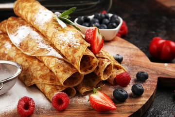

European pancakes

Why should you prepare this?
Children's favourite food, ideal for sweet breakfast. Easy food for beginner cook.
This food is favourite for it's easy preparation and delicious taste.
Ingredients:
- 500 ml of milk
- 500 grams of flour
- 1 egg
- Oil
Steps:
- Mix all three ingredients inside of a bowl.
- Take a pan, pour oil onto it and heat it. When it's warm, turn the heating to low.
- Using ladle, pour dough onto pan and fry it from both sides.
- Repeat until you've run out of dough.
- Rub each pancake slice with chocolate or jam and roll it. Enjoy your meal!